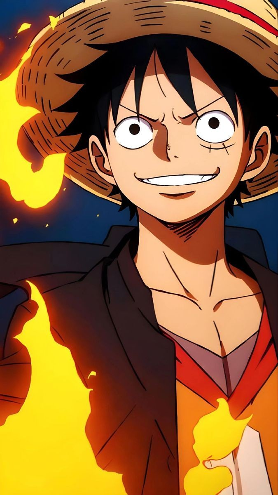
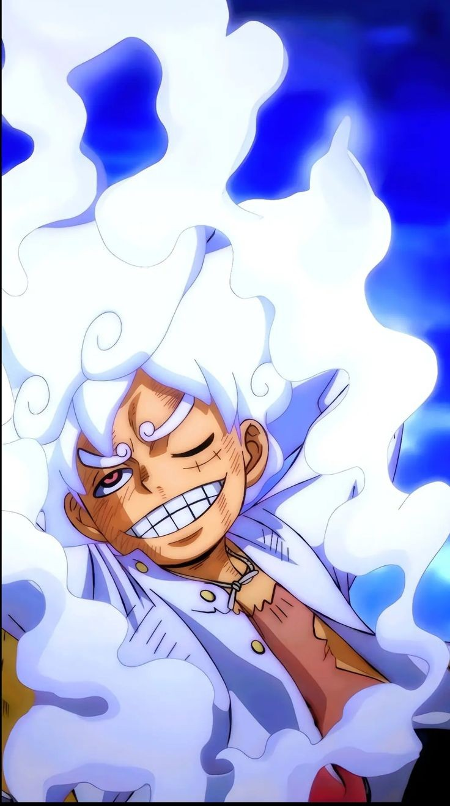

DATA PRIBADI
Nama Lengkap: Monkey D.LUffy
Tempat, Tanggal Lahir: East blue, 5 Mei
Gelar: Yonko
Jenis Kelamin: laki-laki
Kelompok Bajak Laut: Topi jerami(kapten)
MONKEY D. LUFFY
- Monkey D.Luffy adalah seorang karakter fiksi dan tokoh protagonis utama dalam serial anime dan manga one piece karya Eiichio oda. Tujuan hidupnya adalah menjadi raja bajak laut dengan menemukan harta karun legendaris : one pice yang telah ditinggalkan oleh rajak bajak laut sebelumnya, Gol D.Roger
- ia percaya dengan menjadi seorang raja bajak laut, ia akan menjadi orang yang paling memiliki kebebasan di seluruh dunia. ia memakan buah iblis benama mogu-mogu .buah ini memberinya kekuatan sebagai manusia karet. sebagai pendiri dan kapten dari kelompok bajak laut topi jerami, ia tidak hanya menjadi orang pertama yang menciptakannya, tapi juga menjadi patarung terkuat dikelompoknya
KELUARGA
- Luffy merupakan putra kandung dari pemimpin pasukan revolusioner Monkey D.Dragon, saudra angkat dari Portgas D.Ace si "tinju api" dan sabo.

